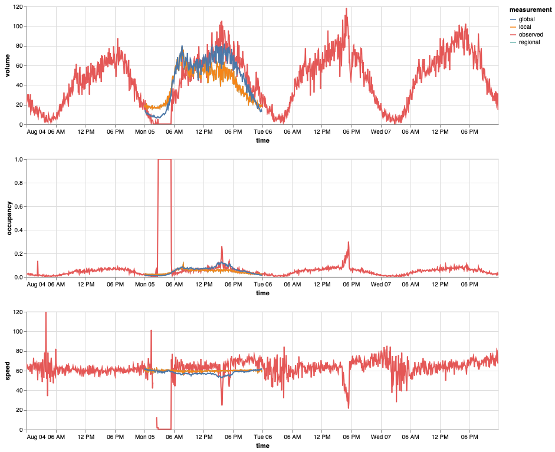

Imputation¶
Visualization¶
It can be difficult to evaluate different diagnostics and imputation methods without being able to easily visualize them.
The following Python snippet uses Altair to create a chart showing the observed values of volume, occupancy, and speed for a given detector, as well as any imputed values (i.e., local regression, regional regression, and global regression).
import os
import altair
import snowflake.connector
altair.data_transformers.disable_max_rows()
# Connect to Snowflake using external browser authentication
conn = snowflake.connector.connect(
user=os.environ["SNOWFLAKE_USER"],
password=os.environ["SNOWFLAKE_PASSWORD"],
authenticator="externalbrowser",
account="NGB13288",
)
# Sample query for a single detector over a given date range. Customize this
# to get different detectors on different dates!
r = conn.cursor().execute(
"""
select * from transform_prd.imputation.int_imputation__detector_agg_five_minutes
where station_id = '1108639' and lane = 3 and sample_date >= '2024-08-04' and sample_date < '2024-08-08'
"""
)
df = r.fetch_pandas_all()
def make_chart(df):
"""
Utility Python function creating the Altair chart.
"""
df = df.rename(columns={
"STATION_ID": "id",
"LANE": "lane",
"SAMPLE_TIMESTAMP": "time",
})
selection = altair.selection_point(fields=['measurement'], bind='legend')
# Create the volume subplot
df_vol = df.rename(columns={
"VOLUME_SUM": "observed",
"VOLUME_LOCAL_REGRESSION": "local",
"VOLUME_REGIONAL_REGRESSION": "regional",
"VOLUME_GLOBAL_REGRESSION": "global",
}).melt(
id_vars=["id", "lane", "time"],
value_vars=["observed", "regional", "local", "global"],
var_name="measurement",
value_name="volume",
)
c_vol = altair.Chart(df_vol, width=800, height=200).mark_line().encode(
x="time:T",
y="volume:Q",
color="measurement:N",
opacity=altair.condition(selection, altair.value(1), altair.value(0.2))
).add_params(selection)
# Create the occupancy subplot
df_occ = df.rename(columns={
"OCCUPANCY_AVG": "observed",
"OCCUPANCY_LOCAL_REGRESSION": "local",
"OCCUPANCY_REGIONAL_REGRESSION": "regional",
"OCCUPANCY_GLOBAL_REGRESSION": "global",
}).melt(
id_vars=["id", "lane", "time"],
value_vars=["observed", "regional", "local", "global"],
var_name="measurement",
value_name="occupancy",
)
c_occ = altair.Chart(df_occ, width=800, height=200).mark_line().encode(
x="time:T",
y="occupancy:Q",
color="measurement:N",
opacity=altair.condition(selection, altair.value(1), altair.value(0.2))
).add_params(selection)
# Create the speed subplot
df_speed = df.rename(columns={
"SPEED_FIVE_MINS": "observed",
"SPEED_LOCAL_REGRESSION": "local",
"SPEED_REGIONAL_REGRESSION": "regional",
"SPEED_GLOBAL_REGRESSION": "global",
}).melt(
id_vars=["id", "lane", "time"],
value_vars=["observed", "regional", "local", "global"],
var_name="measurement",
value_name="speed",
)
c_speed = altair.Chart(df_speed, width=800, height=200).mark_line().encode(
x="time:T",
y="speed:Q",
color="measurement:N",
opacity=altair.condition(selection, altair.value(1), altair.value(0.2))
).add_params(selection)
# Return the stacked chart
return (c_vol & c_occ & c_speed).interactive()
# Actually make the chart!
make_chart(df)
The above snippet creates the following chart, which shows how on August 5th, some unphysically high occupancy reads caused a detector to be flagged as unreliable, resulting in our imputation schemes being used:
